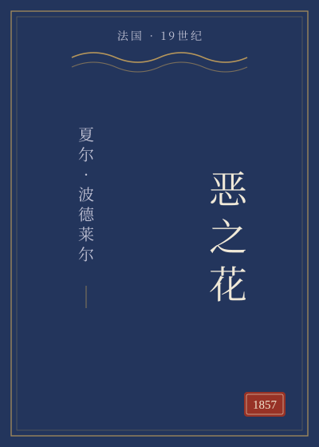
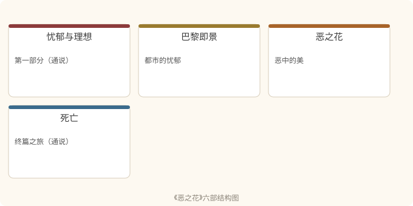

恶之花
一、基本信息
| 作者 | 夏尔·波德莱尔 |
|---|---|
| 成书/出版 | 1857年出版（Britannica：Les Fleurs du mal (1857; The Flowers of Evil)） Charles Baudelaire — Encyclopaedia Britannica（百科全书） |
| 国别/地区 | 法国 |
| 时代 | 近代 · 19世纪 |
| 体裁 | 诗集 |
| 语言 | 法语 |

《恶之花》六部结构图（主题·结构图）
二、创作背景
Britannica（B309）：'perhaps the most important and influential poetry collection published in Europe in the 19th century'（19世纪欧洲最重要、最具影响力的诗集——B309）；'the fullest expression of French Romantic poetry'（B309）。
审查（B309）：'In 1857, authorities charged thirteen poems from this collection with offenses against religion and public morality'——'six poems were censored due to obscenity, leading to a fine'。
结构（B309）：'The collection consists of poems arranged into six sections'；波德莱尔坚持它不是'simple album'而是有'beginning and an end'。
三、内容脉络
六部分：忧郁与理想/巴黎即景/酒/恶之花/叛逆/死亡（篇目通说待核）。
四、主要人物表
| 人物 | 身份 | 说明 |
|---|---|---|
| 诗人 | 抒情主体 | （B309 语境） |
五、主题与艺术特点
- 'correspondances'（感应）——象征主义起点（B309）。
- 美、恶与都市（通说待核）。
- '忧郁'（spleen）主题（通说待核）。
六、影响与评论
- Britannica：'perhaps the most important and influential poetry collection published in Europe in the 19th century'（B309）。
Charles Baudelaire — Encyclopaedia Britannica（百科全书） - Britannica：象征主义领袖'regarded themselves as his followers'（B309）。
Charles Baudelaire — Encyclopaedia Britannica（百科全书）
七、阅读建议
难点
- 'correspondances'的通感诗学。
- 1857审查史。
- 《恶之花》（人民文学出版社/上海译文出版社版本，通说待核）。
- 法文原版（公有领域）。
象征主义源头（先本作后兰波）。
八、待核实
- 1861年第二版增补核对。
- '远行'（Le Voyage）终篇核对。
- 'six poems censored'篇目核对。
本页主要来源
夏尔·波德莱尔的其他收录作品：恶之花